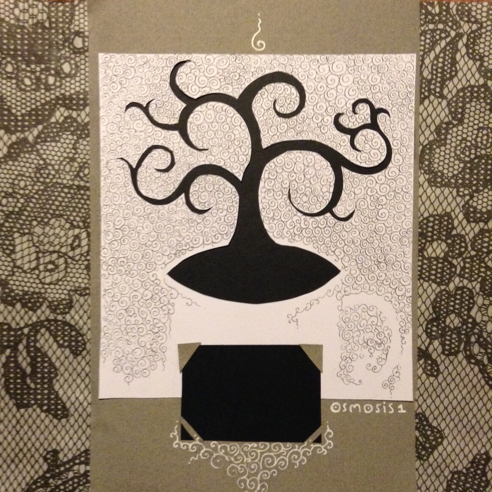

Osmosis #1
Productivity Issue ~ November 2015
by Katerena Kuksenok
Front
Front cover
The perfect cup of coffee is the one not used as a performance-enhancing drug.
Enlightenment
Step 1: Non-Judgment
Step 2: Awareness
Step 3: Enlightenment
Breaking down an enormous task sometimes fails to reduce its fundamental, terifying enormity.
Sometimes, breaking down a task requires the level of clarity and understanding that is impossible before actually doing the task.
Sometimes, the urge to break down a task steps from the urge to decompose it into non-existence, and this is not a problem task management apps can solve.
With small tasks, it's easy to use any number of todo-list-things to reward yourself for the completion of many things. Many apps are designed around the feeling of achievement at ticking a box 'done.' Which means these apps are designed for small things, better than they are designed for big things.
But the really big & important tasks don't work like that. With a big task, maybe you just make a tiny bit of progress, and maybe on just one single thing, in the whole day - and that's on a good day! On a bad day, you put off even that tiny bit of progress in favor of the small but urgent, because it feels so nice to finish many things.
What I do: wunderlist (web/iOS) for the small things; momentum (chrome) for the big things. Sometimes my wunderlist tasks are something like "work on dissertation :)" - and I know from that ":)" that I can check it off as done even if I made a tiny amount of progress, and then just add it as a task again later.
Time
This is me, lying in an existential stupor beneath the unbearable weight of doing independent, creative work. I am struggling to find meaning in my work, which seems futile and foolish, in a big-enough picture.
what should I do
This is J, an inspiring human I worked with once. Between two kids, recurring health issues, constant travel, playing the viola in a group, painting projects, and teaching - between all that, she found time to invent and to write. Outside of her independent, creative work she sees not a source of distraction, but a fountain of inspiration and meaning.
I learned from her that it is important to walk away from something (or someone) that brings love and joy toward something that is daunting, challenging, even excruciating. Love and joy expand and lift me up to undertake only that struggle which allows me to serve the remarkable human project. (Anything less would waste the privilege of choice for independent, creative work.)
If you feel like you have no idea where time goes, and that is distressing to you, consider your tools and processes for: (1) articulating your hopes and goals, and (2) reflecting on your progess.
Most important for choosing a good task management solution: kindness to your future self. This means the task manager needs to manage the big/important tasks, not just the small/urgent tasks. It also means that it needs to be quick to set up, easy to return to after a period of inactivity, and painless to abandon for a better solution.
In his famous last lecture, Randy Pausch reminds us that it's easy to get swept up in the urgent at the expense of the important.
An analog task management system (my fav: BulletJournal) is both forgiving and allows you to use spatial arrangement and annotations. It is great for making incremental progress big, important things.
A digital task management system (my fav: Wunderlist) is good if you need to juggle a lot of deadlines and complete a lot of small, annoying tasks. The reminders are helpful if you're on top of things, but demoralizing if you're fallign behind.
Every few months, I wipe the task-management slate clean, re-evaluate, and adopt a new system. While I finishing data collection and writing the first draft of my dissertation, I used the wunderlist iPod app with no more than 10 tasks per day, and making sure to keep it accurate and up-to-date. While doing initial data collection and analyses, I used the bulletjournal technique to make progress on what felt like enormous, unapproachable research tasks.
When I was an intern in the CMU HCII Randy Pausch lab, a bunch of the juinior researchers went through and kept a detailed activity journal, as described in Pausch's Last Lecture. It was an Excel spreadhseet, with a row for every 15 minutes and a column for every possible activity (e.g., mine included "socializing / coffee break" and "programming"). Every 15 minutes, you had to go and input the number of minutes spent on each activity. This was such a huge pain that, within a few hours, I became much more focused. I would rarely switch between tasks, because I knew it would mean opening the dreaded spreadsheet and typing all these annoying numbers in. I kept this journal for 3 days in 2009, and 1.5 weeks in 2011; both were informative and effective experiences.
A demanding, painful short-term intervention for tracking time can be effective both for awareness and behavior change. Other than that the spreadsheet, I like toggl.com, which I have used as a slightly-longer-term intervention for a few months in 2012 and 2014.
To get longer-term statistics about where you time goes, I would recomment RescueTime, which stays mostly invisible and tracks which applications you use on your computer. It is easy to set it up to bring up alerts ("You have spend 1h on Distracting Time today!") and it is only mildly inconvenient to go through and adjust how distracting what application is, or what task it is associated with.
Even with RescueTime, I found myself changing my work patterns by using different applications for different tasks; for example I use 4 different text-editing environments (GDocs, Brackets, Draft, Evernote) in a way that semantically maps onto the activity.
There is no wrong way to engage in meditative practice. There are many traditions, and all that I know of stress acceptance and non-judgment. Two I am most familiar with are vipassana (focusing on the breathing; to see things as they truly sre) an metta (or lovingkindness - offering prayers and blessings to various people, the world, and yourself). The most important thing is to find a teacher, an actual human being to provide feedback and guidance. There are many, many books about all this
There is nothing wrong about using meditation apps. I tried a lot of them for a time, and Breathe seemed the best, but I prefer to meditate without guiding audio or timers. I disliked headpace because it pretended to take the place of the teacher, who I do not think can be replaced by an app. But, again, there is no wrong way to meditate.
Being still is a skill
but it's really a thrill
to be peaceful at will
(so I'd argue it's well worth the trouble)
Crafting a place of refuge within yourself, cultivating peace, takes patience and persistence. Formal practice (meditating) helps build the skill for everyday, informal practice (creating a healing moment of peace after a long day on a crowded bus; finding inspiration in everything; focusing on a task and not getting distracted; etc)
Creavivity
page 3 page 4
The act of making can be both deeply satisfying, nourishing, and engrossing, but also has a high co-incidence with emotional suffering.
Flow is best achieved when there the right combination of challenge and skill: hard enough not to be bored, not so hard as to be overwhelmed.
No one has ever written, painted, sculpted, modeled, built, or invented except literally to get out of hell. ― Antonin Artaud
To consistently get into the flow state, it's necessary to cultivate skills in articulating goals and reflecting on progress (see pages 5-6).
Meditation may help build concentration skills necessary for flow, as well as to cope with possible emotional overwhelm of creativity or inspiration (see page 9).